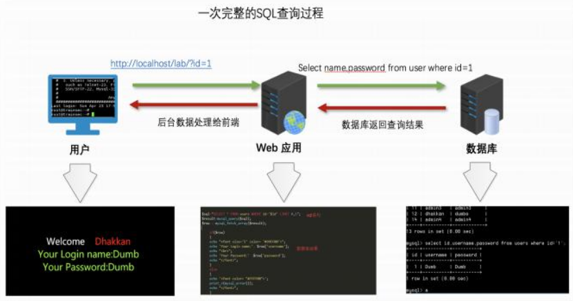
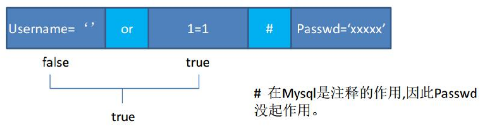

注入原理
结构化查询语言(Structured Query Language)简称SQL ,它是一种特殊目的的编程语言,是一种数据库查询和程序设计语言,用于存取数据以及查询、更新和管理关系数据库系统;同时也是数据库脚本文件的扩展名。使用sql正常的查询流程应该是这样

但客户端发送到服务器的参数是用户可控的，可以构造适当的语法破坏原有SQL结构达到编写程序时意料之外结果的攻击行为。其构成sql注入原因可以归结为以下两个方面叠加造成的:
1.程序编写者在处理应用程序和数据库交互时,使用字符串拼接的方式构造SQL语句。
2.未对用户可控参数进行足够的过滤便将参数内容拼接进入到SQL查询语句中。
如果程序登录验证模块的SQL语句是这样构成的:
select*from admin where username= ' $username' and passwd= '$password'这个时候在当我们用户名输入'or 1=1#密码输入12345时, SQL语句就变成了:
select*from admin where username='' or 1=1#' and passwd= '12345'
这时就构成万能密码了
sql注入常用的mysql函数
MySQL中三种注释
➢"#” (url编码为%23)
➢"-- " (–后边要跟上一个或多个空格)
➢/*..... */”
➢"/*! .... */" 内敛注释
注: "#" 在URL中会被认为是锚点,想用的时候需要进行编码，“+” 在URL中会被当做空格,因此可以使用-- +来进行注释。
常用mysql函数
➢user( )
select user(); #查看当前连接数据库用户
➢database( )
select database(); #查看当前连接数据库名称
➢version( )
select version(); #查看当前数据库版本信息
➢@ @datadir
select @ @datadir; #数据库文件存放目录
➢@@version_ compile_ _oS
@@version_ compile_ _os #查看当前使用操作系统连接字符串函数
➢concat(str1,str2,str….)
select concat('ada','dsf','dss');该函数作用是返回串联参数的结果的字符串。可能有一个或多个参数。说的通俗一点就是没有分隔符的连接字符串。
➢concat_ Ws(separator, str1,str2…)
select concat_ws('~','ada','dsf','dss');concat_ws( )是concat( )的一种特殊形式,该函数第一个参数是其他参数的分隔符。分隔符在连接字符串之间加入。
➢group_concat(str1,str2,….)
select group_concat(uid,username) frome jfslk;将多行的查询结果以逗号为分隔符连接成为一行结果。
INFORMATION_SCHEMA库
在MySQL >= 5.0版本中才自带的库,它提供了访问数据库元数据的方式,元数据就是关于数据的数据,如数据库名或表名列的数据类型,或访问权限等等。
SCHEMATA表
表: SCHEMATA （提供了当前MySQL中所有数据库库名信息。show databases;的结果就是取之此表。）
字段: SCHEMA_NAME（数据库名）
查询所有数据库名称：
select SCHEMA_NAME from INFORMATION_SCHEMA.SCHEMATA;TABLES表
表: TABLES （提供了关于数据库中的表的信息。详细表述了 某个表属于哪个库,表类型,表引擎,创建时间等信息。）
字段: TABLE_NAME （表名）,TABLE_ SCHEMA （数据库名）
查询指定数据库（test）中所有的表名:
select TABLE_NAME from INFORMATION_SCHEMA.TABLES where TABLE_SCHEMA='test';COLUMNS表
表: COLUMNS （提供了表中的列信息。详细表述了某张表的所有列以及每个列的信息。）
字段: COLUMN_ NAME（字段名）,TABLE_ NAME（表名）,TABLE_ SCHEMA (数据库名)
查询指定数据库( test )中指定表( admin )的所有字段名:
Select COLUMN_NAME from INFORMATION_SCHEMA.COLUMNS where TABLE_SCHEMA='test' and TABLE_NAME='admin';
- 本文链接：https://woosec.com/2020/04/12/sql%E5%8E%9F%E7%90%86/
- 版权声明：本博客所有文章除特别声明外，均默认采用 许可协议。